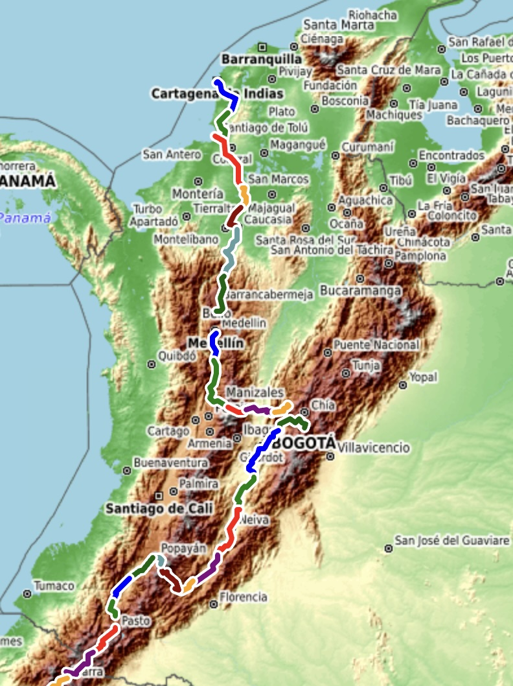
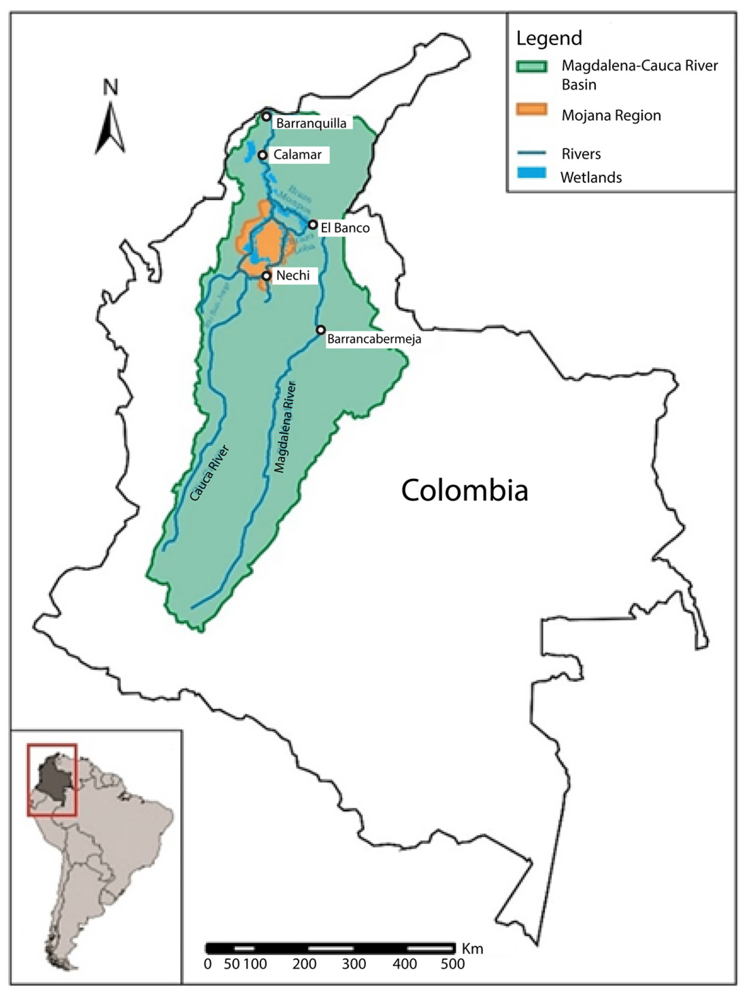
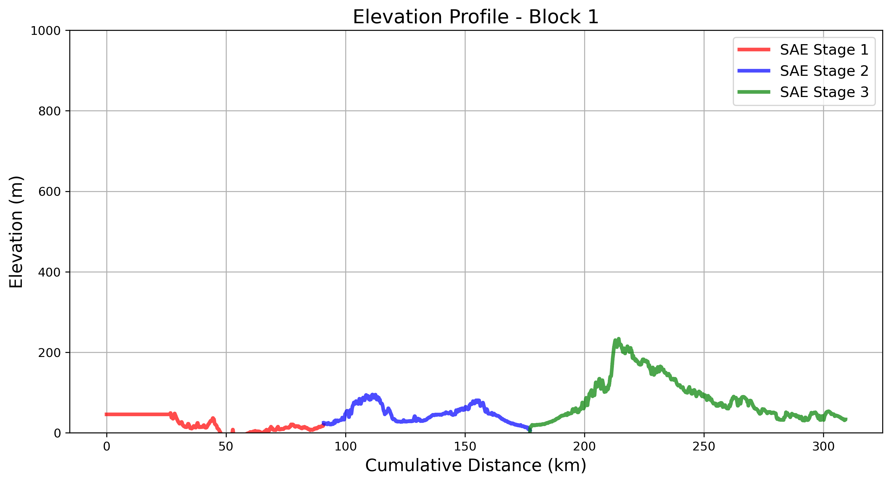
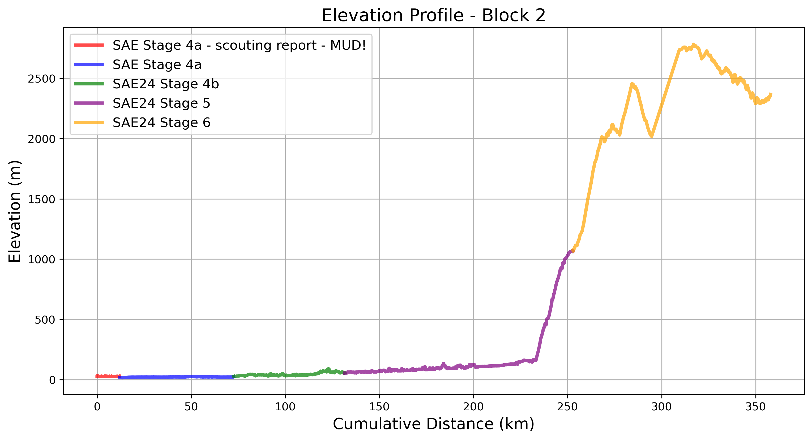
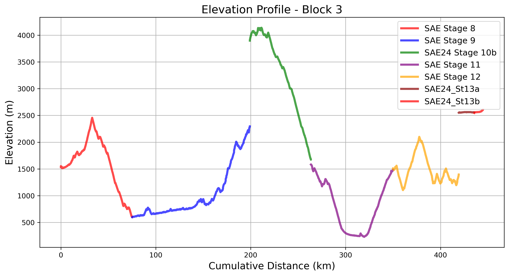
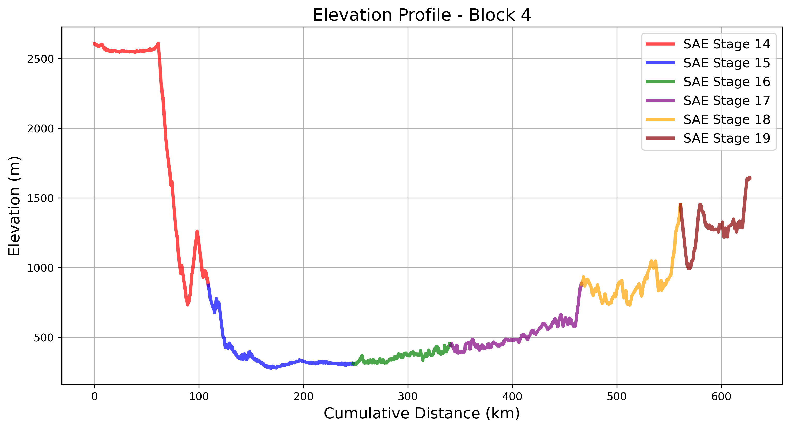
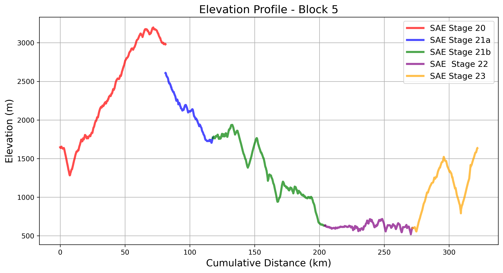

Colombia#
We spent a month riding across Colombia, from 30 June to 30 July 2024. From midsummer heat and humidity along the coast, to the soggy La Mojana - Wetlands and then climbing into the Cordilleras, first along the Cauca River climbing the Cordillera Central to Medellin, and then crossing back down into the Magdalena Valley and up onto the Cordillera Oriental in Bogotoa. From there it was back down into the Magdalena valley and through the Tatacoa desert. Finally climbing into the Colombian Massif near San Augustin near where both the Cauca and Magdalena originate as small streams.
{kind=link}

Fig. 6 A month’s worth of rides across Colombia#
{kind=link}

Fig. 7 The Magalena River Basin From Fig 3 in Nardini et al (2020) Water, 12(4), 1147. https://doi.org/10.3390/w12041147#
Block 1: Caribbean Lowlands#
Cartagena to San Marcos#
The journey begins on the warm, humid plains near the Caribbean. The early stages are relatively flat, winding through mangroves, wetlands, and tropical farmlands. As the route moves inland, the rolling terrain hints at the climbs to come.
Here’s the interactive map showing the actual routes ridden in Block 1:
Map
Elevation
{kind=link}

Fig. 8 Block 1: Stage 1 Cartagena to Maria La Baja, Stage 2 Maria La Baja to Santiago de Tolu, Stage 3 Santiago de Tolu to San Marcos. Total: 311km with 1890m of climbing.#
From Cartagena we headed south and east across the lowlands, into the countryside until we crossed a bridge over the Canal del Dique that connects Cartagena to the Rio Magdalena. The second day we made it to Tulum and camped just across the street from the beach. As we continued south to San Marcos on day three the ground was wetter and wetter.
{kind=link}
{kind=link}
{kind=link}
Block 2: Cauca River Valley and Andean Foothills#
San Marcos to Medellin#
Leaving the coastal plains, the route follows the Cauca River Valley, a deep trench between the Western and Central Cordilleras. This section is marked by hot, flat riding along the river floodplain, followed by steep climbs into the Andean foothills.
Here’s the interactive map showing the actual routes ridden in Block 2:
Map
Elevation
{kind=link}

Fig. 9 Block 2: Pre-stage 4a recon San Marcos to the muddy road. Stage 4a boating Rio San Jorge to Cienega de Ayapel to Ayapel. Stage 4b Ayapel to Caucasia, (by bike!). Stage 5 Caucasia to Valdivia, Stage 6 Valdivia to Trout Camp, near Entrerrios. ~~Stage 7 Trout Camp to Medellin.~~ (skipped this one) Total: 401km with 6319m of climbing.#
We arrived in San Marcos for our first rest day of the tour. The rivers were high on the way into town and it rained overnight. Since I came with my skinny tires (not quite worn out, maybe easier for the early mountains), I was worried about the condition of our first unpaved road of the tour. The original course was 30 odd kilometers along the Rio San Jorge, followed by a boat ride across Ciénaga de Ayapel. If it was muddy, a tire change would have been in order.
I set out on the rest day to have a look at the dirt (now mud!) road. It was so muddy that none of us rode it (see the youtube link below for the full story)! Rather than 30 km of through the mud along the Rio San Jorge, the water was high enough that the local pilots took us directly from San Marcos across the smaller Ciénaga la Cruz, poling through a connection to the Rio San Jorge then back to Ciénaga de Ayapel.
{kind=link}
{kind=link}
{kind=link}
Ben Levin was our media guy for the first half of the trip. I’ll include links to the youtube clips he made to document our trip. Here’s the first one.

🎥 Watch on YouTube – by TDA Global Cycling
After the wetlands came the hills. The very next day we started to climb, just about 1000 meters on the first day. Still some cows up in the hills. It got steeper on the way up to Medellin. Lorenzo Boutall (@worldwidemechanic) looked after us on the climbs (and looked after our bikes at camp) and fellow rider Paul Love making our way up the mountain.
{kind=link}
{kind=link}
{kind=link}
{kind=link}
Block 3: The Coffee Highlands and Magdalena Watershed#
Medellin to Bogota#
Riders from the SiCLas Collective gave us a great sendoff on our way out of Medellin
Cycling Culture in Medellin#

🎥 Watch on YouTube – by TDA Global Cycling
This section moves into Colombia’s Coffee Axis, where ridges and valleys create an undulating rhythm. The route shifts from the Cauca River basin to the Magdalena River watershed, with each day featuring deep descents to tributaries, followed by grueling climbs into cloud forests and coffee plantations.
Here’s the interactive map showing the actual routes ridden in Block 3:
Map
Elevation
{kind=link}

Fig. 10 Block 3: Stage 8 Medellin to La Pintada, Stage 9 La Pintada to Manizales, Stage 10 Manizales to Libano, Stage 11 Libano to Viani, Stage 12 Viani to La Vega, Stage 13 La Vega to Bogota. Total: 540km with 12701m of climbing.#
Block 4: Bogotá to the Tatacoa Desert#
Crossing the Eastern Cordillera, the tour reaches Bogotá before plunging into the Magdalena’s middle course. The descent from Bogotá into the valley is dramatic, giving way to warm, dry terrain. The route then moves through the Tatacoa Desert, a striking landscape shaped by millennia of water and wind erosion.
Here’s the interactive map showing the actual routes ridden in Block 4:
Map
Elevation
{kind=link}

Fig. 11 Block 4: Stage 14 Bogota to Anapoima, Stage 15 Anapoima to Prado, Stage 16 Prado to Desierto de la Tatocoa, Stage 17 Desierto de la Tatocoa to Gigante, Stage 18 Gigante to Elias, Stage 19 Elias to San Agustin. Total: 636km with 7725m of climbing.#
Block 5: The Colombian Massif and Magdalena Headwaters#
Approaching San Agustín, the tour enters the Colombian Massif, where the Magdalena River is born. Each stage weaves through narrow ridgelines and deep ravines, transitioning from humid highlands to the high-altitude páramo of Puracé National Park. The high points between valleys showcase the rugged, untamed nature of the region.
Here’s the interactive map showing the actual routes ridden in Block 5:
Map
Elevation
{kind=link}

Fig. 12 Block 5: Stage 20 San Agustin to Coconuco, Stage 21 Coconuco to Patia, Stage 22 Patia to Remolinos, Stage 23 Remolinos to Pasto. Total: 380km with 9037m of climbing.#
Closing Thoughts#
Colombia’s geography presents an ever-changing challenge—from the humid Caribbean lowlands to the high-altitude ridges of the Andes. Rivers, valleys, and mountain passes define the rhythm of the ride. Every bridge marks a low point, and every pass marks a transition, reinforcing the deep connection between the landscape and the cyclist’s journey.
The road now turns south, deeper into Ecuador, Peru, Bolivia, and beyond—each new stage offering its own valleys, rivers, and mountain passes to cross.
Next Steps#
Stay tuned for the next section of the journey: Crossing Ecuador’s Avenue of the Volcanoes 🚴♂️🌎.